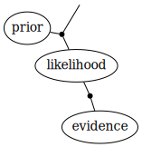

AlgebraicInference.jl
AlgebraicInference.jl is a library for performing Bayesian inference on wiring diagrams, building on Catlab.jl.
Gaussian Systems
Gaussian systems were introduced by Jan Willems in his 2013 article Open Stochastic Systems. A probability space $\Sigma = (\mathbb{R}^n, \mathcal{E}, P)$ is called an $n$-variate Gaussian system with fiber $\mathbb{L} \subseteq \mathbb{R}^n$ if it is isomorphic to a Gaussian measure on the quotient space $\mathbb{R}^n / \mathbb{L}$.
If $\mathbb{L} = \{0\}$, then $\Sigma$ is an $n$-variate normal distribution.
Every $n$-variate Gaussian system $\Sigma$ corresponds to a convex energy function $E: \mathbb{R}^n \to (-\infty, \infty]$ of the form
\[ E(x) = \begin{cases} \frac{1}{2} x^\mathsf{T} P x - x^\mathsf{T} p & Sx = s \\ \infty & \text{else}, \end{cases}\]
where $P$ and $S$ are positive semidefinite matrices, $p \in \mathtt{image}(P)$, and $s \in \mathtt{image}(S)$.
If $\Sigma$ is an $n$-variate normal distribution, then $E$ is its negative log-density.
Hypergraph Categories
There exists a hypergraph PROP whose morphisms $m \to n$ are $m + n$-variate Gaussian systems. Hence, Gaussian systems can be composed using undirected wiring diagrams.

These wiring diagrams look a lot like undirected graphical models. One difference is that wiring diagrams can contain half-edges, which specify which variables are marginalized out during composition. Hence, a wiring diagram can be thought of as an inference problem: a graphical model paired with a query.
Message Passing
Bayesian inference problems on large graphs are often solved using message passing. With AlgebraicInference.jl you can compose large numbers of Gaussian systems by translating undirected wiring diagrams into inference problems over a valuation algebra. These problems can be solved using generic inference algorithms like the Shenoy-Shafer architecture.